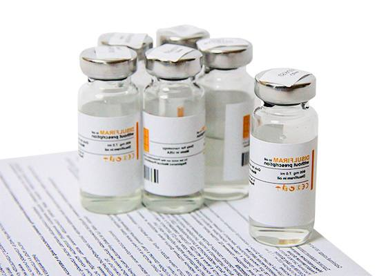

+380(97) 369 76
65
+380(97) 369 76
65Кодирование от алкоголизма уколом Харьков
Кодирование уколом - эффективно и безопасно
Работаем в Одессе, Киеве, Львове, Харькове, Днепре, Запорожье, Черноморске


Бесплатная консультация, работаем круглосуточно 24/7
Кодирование уколом - эффективно и безопасно
Работаем в Одессе, Киеве, Львове, Харькове, Днепре, Запорожье, Черноморске
Кодирование от алкоголизма с помощью инъекций представляет собой передовой и высокоэффективный подход в лечении алкогольной зависимости. Этот метод направлен на формирование у человека стойкого отвращения к любым алкогольным напиткам, воздействуя как на психологическом, так и на физиологическом уровне . Его применение особенно актуально для тех, кто не способен самостоятельно справиться с пагубной привычкой.
Основной принцип действия заключается в создании условий, при которых употребление алкоголя становится крайне неприятным и опасным для здоровья, выступая в качестве мощного сдерживающего фактора. В результате такого воздействия формируется абсолютный отказ от алкоголя. Метод демонстрирует высокую эффективность в достижении устойчивой ремиссии и пролонгированного отвращения к спиртным напиткам.
Важно подчеркнуть, что кодирование уколом — это медицинская процедура, требующая строгого профессионального подхода. Она должна проводиться под наблюдением квалифицированного врача-нарколога, который осуществляет диагностику, назначает препарат и обеспечивает необходимое последующее наблюдение.
Суть метода заключается не просто в формировании “отвращения”, а в создании мощного “химического барьера”. При взаимодействии введенного препарата с этанолом, алкоголь фактически превращается в яд для организма, вызывая тяжелую интоксикацию. Это более точное медицинское описание, которое подчеркивает серьезность и неотвратимость физиологических последствий, обеспечивая более сильный сдерживающий эффект.
Современная наркология предлагает два основных фармакологических подхода к инъекционному кодированию. Первый — это препараты на основе дисульфирама, которые вызывают аверсивную реакцию, делая употребление алкоголя невыносимым. Второй — это препараты на основе налтрексона, которые блокируют центры удовольствия в головном мозге, лишая алкоголь его эйфорического эффекта и снижая тягу. Различие в механизмах действия позволяет врачам подбирать наиболее подходящий метод для каждого пациента, учитывая его индивидуальные потребности и особенности зависимости. Например, для тех, кто ищет сильный физический барьер, подойдет дисульфирам, а для тех, кто хочет уменьшить тягу и “забыть” о приятных ощущениях от алкоголя, — налтрексон.
Процедура кодирования уколом включает в себя инъекцию специального препарата. Выбор места инъекции (подкожно, внутримышечно или внутривенно) определяется врачом в зависимости от выбранного препарата и желаемого эффекта.
Места введения инъекции и их особенности:
Подготовительный этап:
Перед процедурой кодирования крайне важен подготовительный этап. Пациенту необходимо воздерживаться от употребления алкоголя в течение определенного периода. В большинстве случаев этот срок составляет минимум 3-5 дней.
Необходимость этого периода воздержания обусловлена тем, что организм должен быть полностью очищен от алкоголя и его метаболитов, чтобы избежать опасной дисульфирам-этаноловой реакции во время или сразу после процедуры. Точная продолжительность трезвости определяется наркологом после тщательного обследования, включая анализы крови, подтверждающие отсутствие продуктов распада алкоголя в организме. Это обеспечивает безопасность и эффективность кодирования.
Выбор места инъекции не является случайным; он напрямую влияет на скорость абсорбции препарата и, следовательно, на начало и продолжительность его действия. Например, если требуется быстрый эффект для купирования острого состояния, может быть выбрано внутривенное введение. Для долгосрочного поддержания трезвости предпочтительны методы с пролонгированным высвобождением, такие как подкожные импланты или внутримышечные инъекции масляных растворов. Таким образом, решение о месте введения является стратегическим медицинским выбором, адаптированным к желаемому терапевтическому результату и индивидуальным особенностям пациента.
Инъекционное кодирование от алкоголизма базируется на двух основных классах препаратов, каждый из которых имеет свой уникальный механизм действия.
1. Препараты на основе Дисульфирама (Аверсивная терапия)
2. Препараты на основе Налтрексона (Блокировка удовольствия)
Методы введения:
Помимо инъекций (внутривенных, внутримышечных, подкожных), существуют также методы имплантации или подшивки, при которых препарат (таблетка или гель) вводится под кожу или внутримышечно. Это обеспечивает пролонгированное, постепенное высвобождение активного вещества, продлевая эффект на несколько лет.
Выбор между дисульфирамом и налтрексоном, а также методом введения, является индивидуальным и основывается на тщательной оценке состояния пациента, его мотивации и особенностей зависимости. Например, дисульфирам может быть более подходящим для пациентов, которым нужен сильный физический сдерживающий фактор, в то время как налтрексон может помочь тем, кто борется с постоянной тягой к алкоголю, но не нуждается в аверсивной терапии. Это подчеркивает необходимость комплексного подхода и индивидуального подбора лечения квалифицированным наркологом.
Таблица: Сравнение Основных Препаратов для Кодирования Уколом
| Препарат | Действующее вещество | Механизм действия | Основные эффекты | Типичные формы | Примерная длительность действия |
|---|---|---|---|---|---|
| Дисульфирам | Дисульфирам | Блокировка ацетальдегиддегидрогеназы (АЛДГ) | Формирование отвращения, тяжелая реакция на алкоголь | Раствор для инъекций | От 1 месяца до 5 лет |
| Эспераль | Дисульфирам | Блокировка АЛДГ, возможное влияние на дофамин | Отвращение, улучшение эмоционального состояния | Гель, имплант | 1-3 года, до 5 лет |
| Алгоминал | Дисульфирам | Блокировка АЛДГ | Отвращение, непереносимость алкоголя | Раствор для инъекций | До 1 года |
| Торпедо | Дисульфирам | Блокировка АЛДГ | Отвращение, выраженная интоксикация | Раствор для инъекций, имплант | До 12 месяцев |
| Аквилонг | Дисульфирам | Блокировка АЛДГ | Отвращение | Раствор для инъекций | До 1 года |
| Вивитрол | Налтрексон | Блокировка опиоидных рецепторов | Снижение тяги, отсутствие удовольствия от алкоголя | Раствор для инъекций | 1 месяц (инъекция) |
В Харькове кодирование от алкоголизма уколом является одним из наиболее востребованных и эффективных методов лечения тяжелой алкогольной зависимости. Этот метод помогает не только остановить бесконтрольный прием спиртных напитков, но и сформировать психологическое отвращение, предотвращая возможные срывы в будущем.
Доступность данной услуги в Харькове подтверждается наличием множества медицинских учреждений, предлагающих инъекционное кодирование. Медицинская служба UmbrellaPlus является примерами таких учреждений, предоставляющих квалифицированную наркологическую помощь.
Высокий спрос на лечение алкоголизма в Украине, включая Харьков, обусловлен значительной распространенностью алкогольной зависимости в стране. Украина входит в число стран с одним из самых высоких уровней потребления алкоголя на душу населения, занимая высокие позиции в мировых рейтингах по этому показателю и по количеству потерянных лет жизни из-за алкоголя. Это указывает на острую потребность в эффективных методах лечения, таких как инъекционное кодирование, и подчеркивает социальную значимость услуг, предоставляемых наркологическими клиниками в регионе.
“Горячий укол” от алкоголизма представляет собой модифицированный вариант инъекционного кодирования, часто включающий двухэтапный процесс. Это инъекционная методика запретительной терапии.
Двухэтапный процесс:
Более детальное описание “горячего укола” включает обязательную медицинскую детоксикацию (5-7 дней) для полного очищения организма от продуктов распада алкоголя перед инъекцией дисульфирама. После инъекции может быть проведен опциональный этап “провокации”, когда пациенту дают понюхать ватный тампон, смоченный этанолом, чтобы продемонстрировать эффект кодирования.
Название “горячий укол” происходит от характерного побочного эффекта дисульфирама: при взаимодействии с алкоголем (даже в следовых количествах или при вдыхании его запаха) возникает ощущение тепла по всему телу, прилив жара к лицу и конечностям. Это ощущение, наряду с другими симптомами острой интоксикации (тошнота, рвота, головная боль, учащенное сердцебиение, повышение давления), служит мощным сдерживающим фактором.
Ощущение “жара” не просто побочный эффект, а ключевой элемент психологического подкрепления. Оно служит немедленным, ощутимым напоминанием о присутствии препарата и его реакции на алкоголь, усиливая эффект отвращения. Это превращает потенциально неприятный симптом в терапевтический инструмент, который наглядно демонстрирует пациенту, что алкоголь стал для его организма ядом, тем самым укрепляя его решимость к трезвости.
Для успешного и безопасного кодирования от алкоголизма уколом необходимо соблюдать период полной трезвости. Обычно этот период составляет минимум 3-5 дней. В среднем, для инъекционного кодирования требуется около 3 суток воздержания, хотя этот срок может варьироваться от 1 до 7 дней в зависимости от конкретного метода и индивидуальных особенностей пациента. Для имплантации “Эспераля” рекомендуется воздерживаться от алкоголя не менее 48 часов.
Рациональное объяснение такого требования заключается в необходимости полного выведения алкоголя и его метаболитов из организма. Это предотвращает возникновение крайне опасной дисульфирам-этаноловой реакции во время или сразу после процедуры кодирования.
Точная продолжительность периода трезвости определяется врачом-наркологом после тщательного медицинского обследования, которое может включать анализы для подтверждения полного очищения организма от продуктов распада алкоголя. Врач учитывает не только тип выбранного препарата и метод введения, но и индивидуальное состояние пациента, длительность и интенсивность предыдущих запоев.
Этот период воздержания выполняет двойную функцию: он обеспечивает физиологическую безопасность процедуры, а также служит важным индикатором готовности и мотивации пациента к лечению. Успешное прохождение этого начального этапа трезвости является первым шагом на пути к выздоровлению, укрепляя уверенность пациента в своих силах и подтверждая его серьезное намерение изменить свою жизнь.
"Эспераль" — это известный препарат для лечения алкогольной зависимости, активным компонентом которого является дисульфирам. Его механизм действия аналогичен другим дисульфирам-содержащим препаратам: он блокирует фермент ацетальдегиддегидрогеназу, что приводит к накоплению токсичного ацетальдегида при употреблении алкоголя и вызывает крайне неприятные симптомы.
“Эспераль” имеет “более мягкую форму, что обеспечивает высокую переносимость и низкую гепатотоксичность”, а также может использоваться “даже при наличии тяжелых хронических заболеваний таких как гепатит и гепатоз”. Это утверждение требует уточнения. Хотя некоторые формы или дозировки “Эспераля” могут быть лучше переносимы, дисульфирам, как активное вещество, известен своей способностью вызывать медикаментозное поражение печени. Поэтому, несмотря на потенциально “более мягкую” форму, тщательная оценка функции печени и постоянный мониторинг остаются обязательными для всех пациентов, получающих лечение дисульфирамом.
Уникальной особенностью “Эспераля”, отмеченной в некоторых источниках, является его способность стимулировать выделение дофамина на ранних этапах лечения алкоголизма. Это может положительно сказаться на эмоциональном состоянии пациента в период трезвости, что особенно важно, так как многие люди, бросающие пить, сталкиваются с апатией и снижением настроения. Такое свойство может объяснять, почему “Эспераль” воспринимается как “более мягкий” или лучше переносимый препарат, поскольку он может облегчать психологический дискомфорт, помимо создания физического барьера. “Эспераль” доступен в форме геля или импланта для подкожного введения.
Введение дисульфирама или “Эспераль” в ягодицу обычно осуществляется внутримышечно. Этот метод применяется в тех случаях, когда подкожно-жировая прослойка пациента слишком мала, и безопасное введение препарата под лопатку (подкожно) невозможно . Например, инъекция Вивитрола (налтрексона) всегда производится глубоко внутримышечно в ягодичную мышцу.
При выборе места инъекции врач учитывает не только анатомические особенности пациента, но и желаемую фармакокинетику препарата. Мышечный слой обладает более обильным кровоснабжением по сравнению с подкожной тканью, что, как правило, приводит к более быстрой абсорбции препарата. Это может означать, что срок действия кодирования при внутримышечном введении может быть несколько меньше из-за более быстрого выведения препарата из организма. Однако, внутримышечные инъекции также подходят для масляных растворов, которые обеспечивают медленное высвобождение активного вещества в течение длительного времени.
Таким образом, выбор инъекции в ягодицу является клинически обоснованным решением, направленным на обеспечение безопасности и максимальной эффективности лечения с учетом индивидуальных особенностей пациента, даже если это может повлиять на общую продолжительность действия препарата.
Таблица: Сравнение Абсорбции и Объемов Инъекций в Зависимости от Типа Введения
| Тип инъекции | Скорость абсорбции | Типичный объем препарата | Длительность действия | Применение |
|---|---|---|---|---|
| Подкожная | Медленная | Макс. 2 мл | Пролонгированная | Импланты, гели, медленное высвобождение |
| Внутримышечная | Быстрая (до 20 мин) | Макс. 5 мл | Средняя | Водные и масляные растворы, пролонгированное действие |
| Внутривенная | Мгновенная | Любой объем | Кратковременная | Растворы для быстрого эффекта, неотложные состояния |
Внутривенное кодирование является эффективным, но кратковременным методом лечения алкогольной зависимости, при котором дисульфирам вводится непосредственно в вену. Этот метод часто применяется для пациентов с хроническим алкоголизмом после проведения детоксикации.
Преимущества внутривенного кодирования:
Недостатки внутривенного кодирования:
Учитывая кратковременность действия, внутривенное кодирование часто используется как стратегический шаг в общем плане лечения. Его быстрое действие может быть критически важным для стабилизации состояния пациента в острой фазе абстиненции или для немедленного прекращения запоя, выступая в качестве “быстрого старта” или “моста” к более долгосрочным методам. Клиники часто рекомендуют комбинированное кодирование (внутривенное и внутримышечное) для достижения как быстрого, так и длительного эффекта.
Длительность действия кодирования от алкоголизма уколом существенно варьируется и зависит от выбранного препарата, его дозировки и метода введения.
Типичные диапазоны длительности:
В классическом варианте срок кодировки может начинаться от 4 недель и достигать 5 лет. Например, для различных препаратов на основе дисульфирама сроки могут быть следующими:
Часто первую дозу вводят на срок от 8 до 12 месяцев. Это считается наиболее безопасной и эффективной методикой с минимальной токсичностью. Цель такого подхода заключается в предоставлении пациенту достаточного времени для изменения своего отношения к употреблению алкоголя и формирования новых, трезвых привычек. Считается, что для достижения устойчивого результата требуется не менее полугода трезвости.
Выбор оптимальной длительности кодирования является стратегическим решением. Хотя некоторые методы предлагают максимальный срок до 5 лет, начальный период в 6-12 месяцев часто является предпочтительным. Этот срок обеспечивает мощный внешний сдерживающий фактор, одновременно предоставляя пациенту достаточно времени для активного участия в психотерапии и выработки внутренних механизмов преодоления зависимости. Цель состоит не только в принудительном воздержании, но и в том, чтобы пациент смог интернализировать трезвость как часть своей новой жизни. Если период слишком короткий, у человека может не хватить времени на формирование новых привычек; если слишком длинный без сопутствующей психологической поддержки, это может вызвать чувство негодования или “ловушки”. Таким образом, 8-12 месяцев часто рассматривается как оптимальный баланс между безопасностью, эффективностью и созданием условий для устойчивых изменений.
Таблица: Примерная Длительность Действия Препаратов для Кодирования
| Препарат | Действующее вещество | Типичная длительность действия | Форма введения |
|---|---|---|---|
| Дисульфирам | Дисульфирам | От 4 недель до 5 лет | Инъекция, имплант |
| Эспераль | Дисульфирам | 1-3 года, до 5 лет | Гель, имплант |
| Торпедо | Дисульфирам | 3-12 месяцев | Инъекция, имплант |
| Аквилонг | Дисульфирам | До 1 года | Инъекция |
| Алгоминал | Дисульфирам | До 1 года | Инъекция |
| Вивитрол | Налтрексон | 1 месяц | Инъекция |
Стоимость кодирования от алкоголизма уколом в Харькове может значительно варьироваться. Цена зависит от ряда факторов, включая выбранный препарат, срок действия кодирования, метод введения (инъекция или подшивка), а также от ценовой политики конкретной клиники и наличия дополнительных услуг (например, выезд на дом, детоксикация).
Ориентировочные цены на кодирование уколом в Харькове:
| Услуга | Примерная цена (ГРН) |
|---|---|
| Кодирование от алкоголизма (общая) | от 3500 - 6000 |
| Укол от алкоголизма (общая) | от 1500 - 3999 |
| Укол от алкоголизма (на дому) | от 1999 - 3000 |
| В/М инъекция алко-блокатора «Дисульфирам» (1 год) | 7000 |
| В/М инъекция алко-блокатора «Вивитрол» | 12000 |
| Имплантация блокатора алкоголя «Эспераль» (1 год) | 9500 |
| Подшивка от алкоголизма | от 3700 - 9999 |
| Кодирование по методу Довженко | от 2500 - 14999 |
Цены являются ориентировочными и могут меняться. Для получения точной информации рекомендуется связаться с выбранной клиникой напрямую.
Значительные различия в стоимости услуг (например, от 1500 грн за базовую инъекцию до 12000 грн за “Вивитрол” или 15000 грн за комплексные методы) отражают не только тип препарата и длительность, но и объем предоставляемых услуг. Более низкие цены могут указывать на базовую инъекцию, тогда как более высокие могут включать первичную диагностику, комплексную консультацию, использование премиальных препаратов, более длительный срок действия, выезд на дом или даже начальную психологическую поддержку. Это означает, что пациентам следует сравнивать не только стоимость самой инъекции, но и весь пакет услуг, чтобы обеспечить качественное и всестороннее лечение.
Процедура кодирования от алкоголизма уколом, несмотря на свою эффективность, имеет ряд строгих противопоказаний. Перед ее проведением обязательно проводится тщательное медицинское обследование для выявления любых состояний, при которых данная процедура может быть опасна или неэффективна.
Основные медицинские противопоказания:
Поведенческие и психологические противопоказания:
Обширный список противопоказаний подчеркивает, что кодирование от алкоголизма является серьезной медицинской процедурой, а не “волшебной таблеткой”. Она предъявляет значительные требования к различным системам организма, особенно к печени и сердечно-сосудистой системе, которые часто уже скомпрометированы у людей с хроническим алкоголизмом. Это усиливает необходимость тщательного предварительного обследования для обеспечения безопасности пациента.
Помимо медицинских условий, критически важным является искреннее желание пациента прекратить употребление алкоголя. Кодирование — это сдерживающий фактор, но оно не устраняет глубинные психологические причины зависимости. Если пациент не мотивирован или его принуждают к лечению, риск рецидива значительно возрастает, что может привести к опасным последствиям. Успех лечения во многом зависит от внутренней готовности пациента к изменениям, а медикаментозное кодирование служит лишь поддержкой на этом пути.
Таблица: Основные Противопоказания к Кодированию Уколом (Дисульфирам и Налтрексон)
| Категория противопоказаний | Конкретные заболевания/состояния | Применимо к Дисульфираму | Применимо к Налтрексону |
|---|---|---|---|
| Сердечно-сосудистые | Инфаркт, инсульт, гипертония II-III ст., аневризма аорты, ХСН | Да | Да |
| Печеночные | Цирроз, тяжелая печеночная недостаточность, гепатиты | Да | Да |
| Неврологические/Психические | Белая горячка, психические заболевания, эпилепсия, суицидальные наклонности, повреждения мозга | Да | Да |
| Эндокринные | Сахарный диабет | Да | Нет (в некоторых случаях) |
| Онкологические | Злокачественные опухоли | Да | Да |
| Инфекционные | ВИЧ, туберкулез легких | Да | Нет |
| Поведенческие | Отсутствие добровольного согласия, алкогольное опьянение/абстиненция | Да | Да |
| Другие | Беременность, грудное вскармливание, возраст до 18 лет | Да | Да |
Дисульфирам, вводимый инъекционно, является одним из наиболее проверенных и широко используемых препаратов в мировой наркологии для лечения алкогольной зависимости. Он успешно зарекомендовал себя в таких странах, как Америка, Германия, Австралия и Норвегия. В США дисульфирам (Антабус) применяется более 65 лет, и его эффективность в программах по реабилитации алкоголиков составляет более 50%.
Препарат используется для лечения алкогольной зависимости на любой стадии и считается безопасным и основным инструментом в борьбе с алкоголизмом. Его высокая эффективность как сдерживающего фактора подтверждена многолетним опытом. В Харькове инъекцию дисульфирама можно получить в специализированных медицинских учреждениях, таких как медицинская служба UmbrellaPlus.
Важно понимать, что дисульфирам, хотя и является мощным сдерживающим фактором, сам по себе не является полным излечением от алкоголизма. Его успех часто связан с тем, что он выступает в роли “моста”, обеспечивая период принудительной трезвости. Этот период критически важен, так как он позволяет пациенту физически воздерживаться от алкоголя, давая возможность мозгу начать восстанавливаться и, что самое главное, позволяя человеку активно включиться в более глубокую психологическую и поведенческую терапию.6 Без этого “окна возможностей”, создаваемого дисульфирамом, многим пациентам было бы крайне сложно даже начать работу над собой.
При употреблении алкоголя после кодирования уколом, особенно препаратами на основе дисульфирама, возникает крайне тяжелая и опасная для жизни дисульфирам-этаноловая реакция. Симптомы включают сильную тошноту, рвоту, головную боль, учащенное сердцебиение, резкие скачки давления, потливость, затрудненное дыхание, панические атаки. В тяжелых случаях это может привести к инфаркту, инсульту, отеку мозга, эпилептическим припадкам, коме и даже летальному исходу.
Если пациент строго воздерживается от алкоголя, побочные эффекты от инъекции дисульфирама обычно минимальны. Они могут включать легкую головную боль, сонливость, утомляемость, акне, снижение потенции или металлический привкус во рту. Эти симптомы, как правило, проходят в течение нескольких недель.
Да, психологическая поддержка является обязательной составляющей комплексного лечения алкоголизма. Кодирование создает физический барьер для употребления алкоголя, но не устраняет глубинные психологические причины зависимости. Психотерапия, индивидуальные и групповые консультации, а также участие в группах поддержки помогают найти и устранить причины тяги к спиртному, справиться с эмоциональными проблемами, сформировать навыки трезвой жизни и адаптироваться в обществе.
Нет, кодирование от алкоголизма категорически запрещено без полного, добровольного и осознанного согласия пациента. Принудительное кодирование не только неэффективно, но и опасно, поскольку успех лечения напрямую зависит от мотивации и готовности человека к изменениям.
“Провокация” — это опциональная, строго контролируемая медицинская процедура, которая может быть проведена через несколько дней после инъекции. В ходе “провокации” пациенту дают понюхать небольшое количество этанола (например, с ватного тампона), чтобы он ощутил немедленную, хотя и легкую, аверсивную реакцию на алкоголь. Это помогает наглядно продемонстрировать эффект кодирования и укрепить решимость пациента воздерживаться от спиртного. Процедура проводится исключительно в условиях клиники под наблюдением врача.
Длительность реабилитации после кодирования индивидуальна, но для достижения устойчивого результата обычно рекомендуется курс от 2-3 месяцев до полугода или даже года. Реабилитация направлена на изменение мировоззрения, переоценку ценностей, формирование новых навыков преодоления трудностей без алкоголя. Она может включать работу по 12-шаговой программе, групповые и индивидуальные психотерапевтические занятия.
Инъекционное кодирование является мощным инструментом в борьбе с алкогольной зависимостью, но оно редко бывает достаточным для достижения долгосрочной и устойчивой трезвости. Зависимость — это сложное биопсихосоциальное заболевание, и для его преодоления требуется комплексный подход.
Кодирование создает необходимый физический барьер, обеспечивая период принудительной трезвости. Однако оно не устраняет глубинные психологические причины, которые привели к развитию зависимости. Для устойчивого выздоровления крайне важна всесторонняя психологическая поддержка. Это включает индивидуальную и групповую терапию, консультирование, направленное на выявление и проработку эмоциональных проблем, травм, деструктивных установок и поведенческих паттернов, провоцирующих употребление алкоголя.
Реабилитационные программы, такие как 12-шаговая программа, играют ключевую роль в формировании нового образа жизни. Они помогают изменить взгляд на себя и на алкоголь, развить новые стратегии совладания со стрессом и трудностями без обращения к спиртному. Минимальный курс реабилитации составляет 2-3 месяца, но наилучшие результаты достигаются при более длительном пребывании в специализированных центрах (от полугода до года).
Постоянная поддержка после завершения активной фазы лечения также критически важна. Посещение групп Анонимных Алкоголиков, участие в программах послелечебной поддержки помогают поддерживать трезвость, делиться опытом и получать поддержку от единомышленников, что значительно снижает риск рецидива.
Таким образом, кодирование — это важный, но лишь первый шаг. Успех в долгосрочной перспективе зависит от готовности пациента к глубокой внутренней работе и его вовлеченности в комплексную программу реабилитации и психологической поддержки.
Отзывы пациентов, прошедших процедуру кодирования уколом, часто свидетельствуют о значительных позитивных изменениях в их жизни. Эти свидетельства служат мощным подтверждением эффективности метода и вдохновляют тех, кто только рассматривает возможность лечения.
Многие отмечают, что после кодирования тяга к спиртному практически исчезает, а жизнь “круто меняется”. Пациенты обретают возможность вернуться к нормальной жизни, уделять время семье и заниматься тем, что раньше было невозможно из-за зависимости. Ощущение отвращения к алкоголю, даже к его запаху, становится мощным сдерживающим фактором, помогая поддерживать трезвость.
Подобные истории успеха подчеркивают не только физиологический эффект кодирования, но и его глубокое психологическое воздействие, которое помогает людям восстановить контроль над своей жизнью и обрести новую перспективу.
Успех кодирования от алкоголизма уколом в значительной степени зависит от последующего ухода и поддержки. Сама инъекция является важным шагом, но она не заменяет комплексную работу по поддержанию трезвости.
Непосредственный послепроцедурный уход:
В первые 1-2 дня после кодирования рекомендуется соблюдать щадящий режим и больше отдыхать. Если процедура включала подкожное введение или имплантацию, важно следить за гигиеной раны и менять стерильную повязку в течение недели.
Долгосрочная поддержка:
Для предотвращения рецидивов и формирования устойчивой трезвости крайне важен комплексный подход, включающий:
Эта “невидимая” часть лечения — послепроцедурный уход и поддержка — имеет решающее значение для долгосрочной трезвости. Инъекция создает физический барьер, но зависимость является сложным биопсихосоциальным заболеванием. Устойчивая трезвость требует проработки психологических, эмоциональных и социальных факторов, способствующих употреблению алкоголя. Последующая терапия и группы поддержки помогают человеку построить новую жизнь, свободную от алкоголя, развить здоровые механизмы совладания и успешно реинтегрироваться в общество. Это долгосрочные инвестиции, которые делают первоначальное кодирование по-настоящему эффективным.
Кодирование от алкоголизма уколом является мощным и научно обоснованным методом, способным стать первым и решающим шагом на пути к трезвости. Создавая физиологический барьер к употреблению алкоголя, он предоставляет пациенту критически важное время для переосмысления своей жизни и начала глубокой работы над собой.
Однако успех в долгосрочной перспективе не ограничивается лишь медицинским вмешательством. Он неразрывно связан с искренним желанием пациента к изменениям и его готовностью принять комплексный подход, включающий психологическую поддержку и реабилитацию. Именно в сочетании с этими элементами кодирование становится не просто временной мерой, а катализатором для построения новой, здоровой и полноценной жизни.
Трезвая жизнь прекрасна, и она вполне достижима. Если вы или ваши близкие готовы сделать этот шаг, обратитесь к квалифицированным специалистам. Бесплатную консультацию врача-нарколога можно получить, позвонив по указанным контактным данным. Примите решение о трезвости с UmbrellaPlus звоните по номеру 050-021-69-57. Мы — это ваш путь к новой жизни.
Анонимно

"Дуже довго не міг самостійно позбавитися залежності, тому зважився на підшивку. Процедура пройшла успішно, і з того часу я навіть не думаю про спиртне. Страх перед можливими наслідками допомагає триматися на плаву, а підтримка фахівців – величезна підмога у цьому нелегкому шляху. Центр надає як фізичну, а й моральну допомогу. Вдячний їм за другий шанс."
Анонимно
"Решила сделать укол от алкоголизма по рекомендации подруги, которая проходила эту процедуру в этом же центре. Я сомневалась, но врачи всё объяснили, успокоили. После укола не чувствую тяги к алкоголю, хотя раньше сложно было представить день без выпивки. Сейчас наслаждаюсь трезвостью, чувствую себя намного лучше."
Анонимно
"Я никогда не думал, что психологическое воздействие может настолько сильно повлиять на мою жизнь. Врач помог осознать всю серьезность ситуации, и теперь алкоголь не вызывает у меня никакого интереса. Процедура безопасна и эффективна, рекомендую тем, кто хочет по-настоящему изменить свою жизнь."
Анонимно
"Я прошла кодирование гипнозом, и это было удивительное переживание. Во время сеанса я почувствовала глубокое расслабление, а потом – будто внутри что-то изменилось. Сейчас я свободна от алкоголя и наслаждаюсь этим состоянием. Благодарю центр за профессионализм и заботу! Отдельная благодарность Станиславу Вячеславовичу"
Анонимно
"Чесно кажучи, боявся рецидиву, але з процедури минуло півроку, і я навіть не думаю про випивку. Життя почало змінюватися на краще. Дякуємо лікарям за підтримку та мотивацію!"
Анонимно
"Після багаторічної боротьби із залежністю вирішила звернутись в клінку. Спочатку переживала, але лікарі дуже докладно розповіли про процес та можливі наслідки. Зараз я не п'ю вже 8 місяців і почуваюся чудово. Я така щаслива, що знайшла цей центр і знайшла контроль над своїм життям."
Анонимно
"Метод Долженко казался мне странным, но я решил попробовать. Оказалось, что это не просто кодировка, а глубокая работа с психикой. Это позволило мне кардинально изменить отношение к алкоголю. Уже год я не пью, и не планирую возвращаться к прежней жизни. Простое человеческое спасибо!"
Анонимно
"Гипноз помог мне избавиться от постоянной тяги к алкоголю. После сеансов я заметила, что стала спокойнее и увереннее в себе. Теперь алкоголь меня больше не интересует. Центр мне очень помог, и я благодарна за их заботу и поддержку."
Приезд в течении 60 минут от момента поступления заявки
Наши филиалы есть во всех больших городах Украины.
Мы оказываем профессиональную доказательную медицинскую помощь. Гарантией является наше имя.
Номер телефона:
+380 (97) 369 76 65
+380 (50) 021 69 57
Адрес главного офиса: г. Харьков ул. Сумская 47
Офис вашего города нужно
уточнить
Работаем в: Одессе, Киеве, Львове, Харькове, Днепре,
Запорожье
Telegram: t.me/umbrellaplus
График работы: Круглосуточно